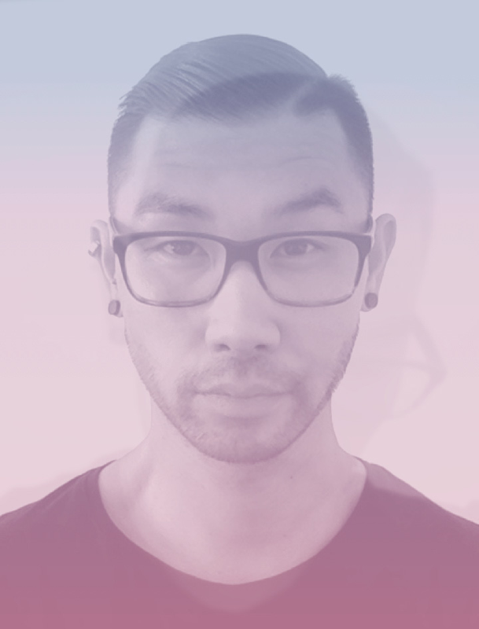
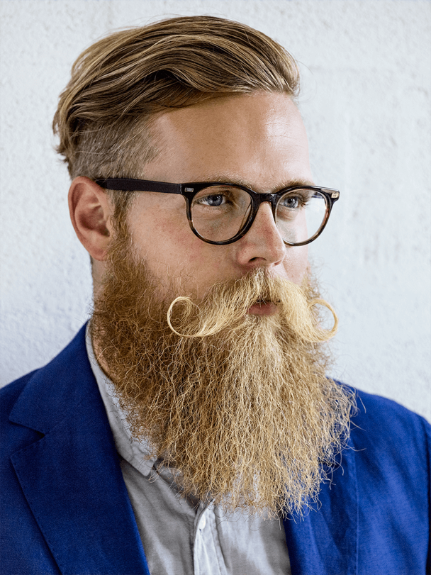
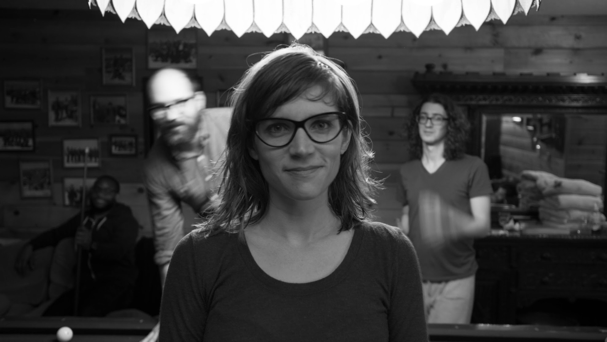
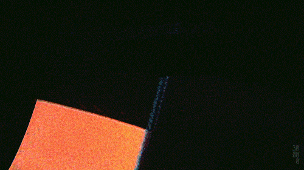

Simon Pan
San Francisco, CA
Simon is a Product Designer and
UI Designer based in California.
His portfolio boasts names like
Amazon Prime Music, Uber, and
Medium—where he resides right
now. He has a Bachelor's Degree
of Computer Science, and loves
traveling and living abroad.

Tobias Van Schneider
New York City, NY
Tobias is a German designer living
and working in New York City, NY.
He's formerly worked at Spotify
as the Lead Product Designer and
Art Director, and is currently
serving on the AIGA Board of
Directors in New York. He's worked with
Red Bull, Wacom, Google, and Ralph Lauren.
He currently works on Semplice, a portfolio
website that makes displaying your work both
simple and beautiful.

Brynn Evans
San Francisco, CA
Brynn is an user experience designer at
Google, a 7th-gen Californian, and Stanford alum.
She runs thinking workshops at Google, and
previously at Apple, McAfee, Esteé Lauder,
and a few organizations abroad. She began her
UX career as a researcher; otherwise, she's a
self-taught designer.
